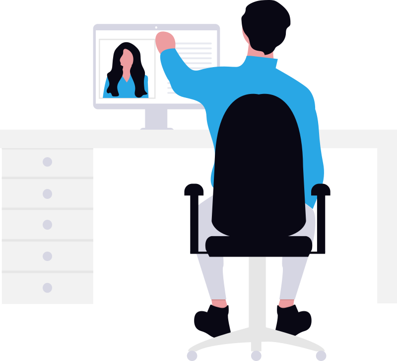
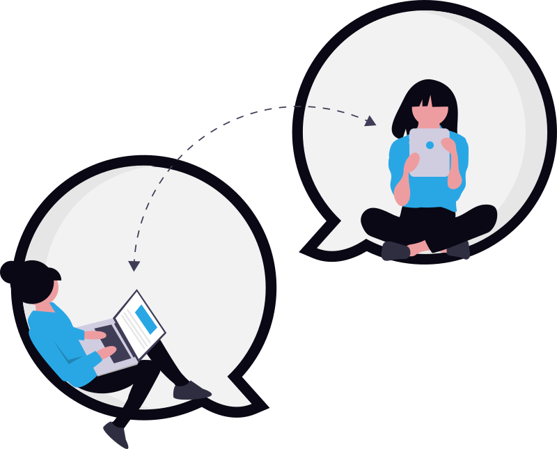
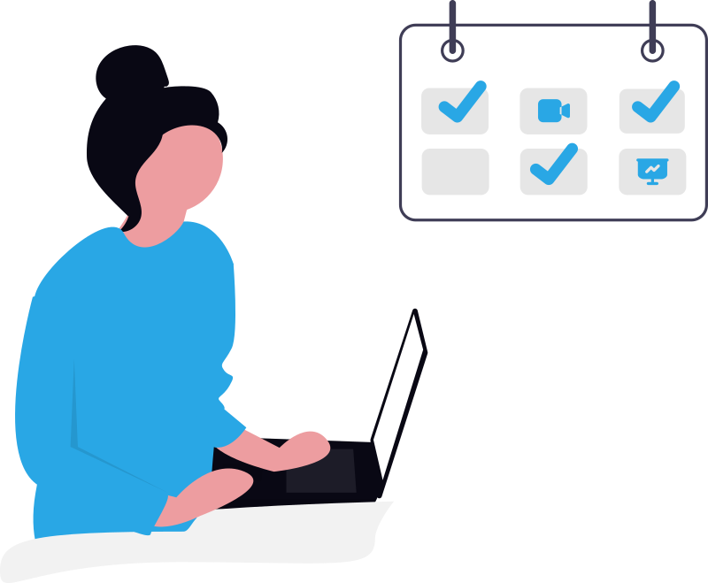

Consultez un médecin
en Ligne 24h/24
Connectez-vous facilement avec des médecins qualifiés depuis chez vous. Consultations sécurisées, paiements locaux et suivi médical personnalisé.
.jpg)
Nos services
Des solutions médicales complètes adaptées à vos besoins
Consultation Vidéo
- Connexion HD sécurisée
- Enregistrement automatique
- Partage de documents
Dossier Médical en ligne
- Historique complet
- Prescriptions électroniques
- Résultats d'analyses
Prise de rendez-vous
- Réservation en ligne
- Rappels automatiques
- Reprogrammation facile
messagerie médicale
- Sans rendez-vous 24h/24
- Réponse du moyenne en 1h
- Prise en charge possible par votre mutuelle
Comment ca Marche?
Un process simple et rapide
✨Un véritable centre de centé en ligne
Nos spécialités pour optimiser votre bien etre
Notre objectif : rendre accessible une expertise médicale de qualité, où que vous soyez. Nous réunissons une équipe de médecins qualifiés dans plusieurs domaines pour offrir un suivi complet et personnalisé à chaque patient :
🤍 Médecine générale
🤍 Pédiatrie
🤍 Gynécologie & santé de la femme
🤍 Dermatologie
🤍 Psychologie & bien-être mental
🤍 Ophtalmologie
🤍 ORL
🤍 Cardiologie
🤍 Diabétologie & endocrinologie
🤍 Bucco-Dentaires
🤍 Nutrition & diététique
🤍 Rhumatologie
🤍 Urologie
🤍 Médecine du travail
🤍 Gastro-entérologie
🤍 Médecine interne
🤍 Infectiologie
.jpg)
Votre santé, notre priorité — accessible, humaine et connectée.
Choisir notre plateforme, c’est opter pour une nouvelle manière de consulter un médecin : simple, rapide et digne de confiance.
- Accession : obtenez une consultation où que vous soyez, à tout moment.
- Médecins qualifiés et certifiés : chaque spécialiste est vérifié par notre équipe médicale.
- Tarifs transparents et abordables : pas de surprise, la santé devient accessible à tous.
📌 Voici ce qui nous différencie des autres :

💬 Consultations via WhatsApp ou Zoom
Nos consultations sont conçues pour être simples et pratiques, selon votre préférence.

🤝 Support client réactif
Notre équipe d’assistance est disponible pour vous aider à chaque étape. Un simple message suffit pour obtenir de l’aide.

💻 Suivi digitalisé
Vos antécédents et prescriptions toujours accessibles en ligne
Notre mission est de rendre les soins médicaux accessibles à tous, en brisant les barrières de distance, de coût et de temps.
Offrir des consultations médicales de qualité.
Garantir la confidentialité absolue des données patients.
Assurer la sécurité totale des échanges et paiements.
Promouvoir une santé digitale responsable et éthique.
Encourager la prévention et l’éducation sanitaire.
Simplifier le parcours de soin grâce à la technologie.
Former continuellement nos équipes médicales.
Mettre l’innovation au service du bien-être des patients.
Parce que votre santé mérite le meilleur, partout, à tout moment.

Vos consultations peuvent
être prises en charge par
l'Assurance Maladie
Vous pouvez bénéficier du tiers payant si :
Votre téléconsultation est réalisée en vidéo
Votre médecin traitant n'est pas disponible ou vous n'en n'avez pas.
Vous en parlez mieux que nous
Vous avez une question sur la téléconsultation ?
Prêt à commencer ?
Rejoignez des milliers de patients qui font confiance à EMSTE
Créer mon compte gratuitement